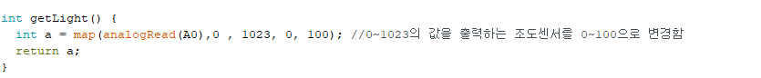

필요한 핀 지정과 프로젝트에 필요한 라이브러리 추가
DC모터 핀을 아웃풋으로 지정하고 모터 제어에 사용하는 EN핀의 속도를 지정해줌

조도센서의 값을 읽어온뒤 사용자가 확인하기 쉽게 map함수를 이용해 0~100의 밝기 값으로 범위를 지정.
커튼을 올리고 내리는 함수, 전역 변수 k를 이용해 커튼이 올라갔는지 내려갔는지 체크.
받아온 데이터를 아두이노에서 사용자의 폰으로 직접적으로 전달해주는 함수, 첫 시작 지점을 999 끝 지점을 888로 보내준 뒤 여러개의 데이터를 띄어쓰기 기준으로 나눠서 리스트로 저장한 후 필요한 데이터를 뽑아오는 함수.
사용자가 동작하면 if문으로 어떤 작업을 해야할지 판별후 그에 맞는 동작을 실행하는 블록
수동모드에서 커튼을 올리고 내리는데 사용하는 블록, 올리기를 터치시 동일 버튼을 여러번 터치해 동작이 꼬이지 않게하기 위해 올리기를 동작했을 경우, 올리기 버튼을 비활성화하고 내리기 버튼을 활성화 시킨다.
모드 선택하는 버튼이다, 수동일 경우 전역변수 '모드'를 0으로 지정시키고 커튼 올리기, 내리기 버튼을 활성화로 하며 자동일 경우에는 모드변수를 1로 지정시키고 커튼 올리기, 내리기 버튼을 비활성화 한다.
블루투스가 연결상태인지 확인 한후, 만약 연결이 되어 있다면 아두이노에서 데이터가 왔는지 검사를 한다. 만약 데이터가 전달이 되었다면, 데이터를 띄워쓰기 기준으로 분활을 한후 리스트에 저장해서 밝기값은 출력하고, 커튼이 내려갔는지 올라갔는지 출력해주는 블럭이다.